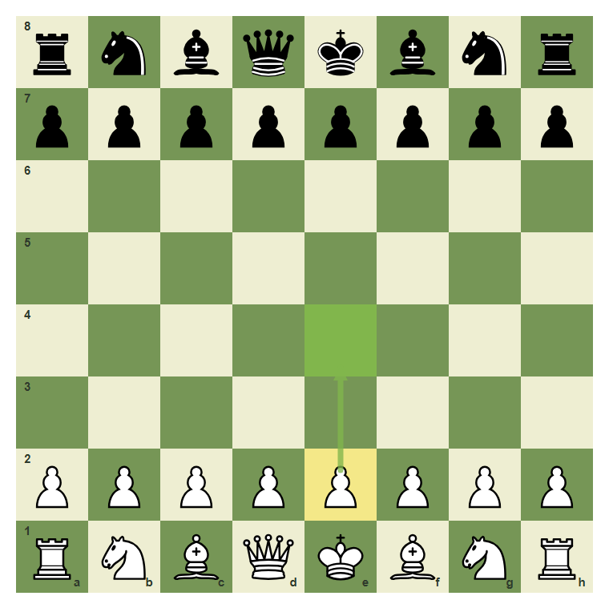
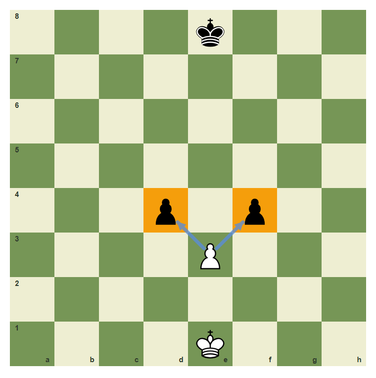
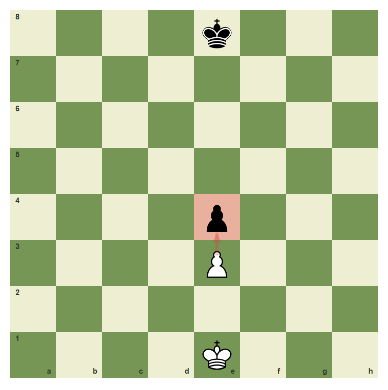
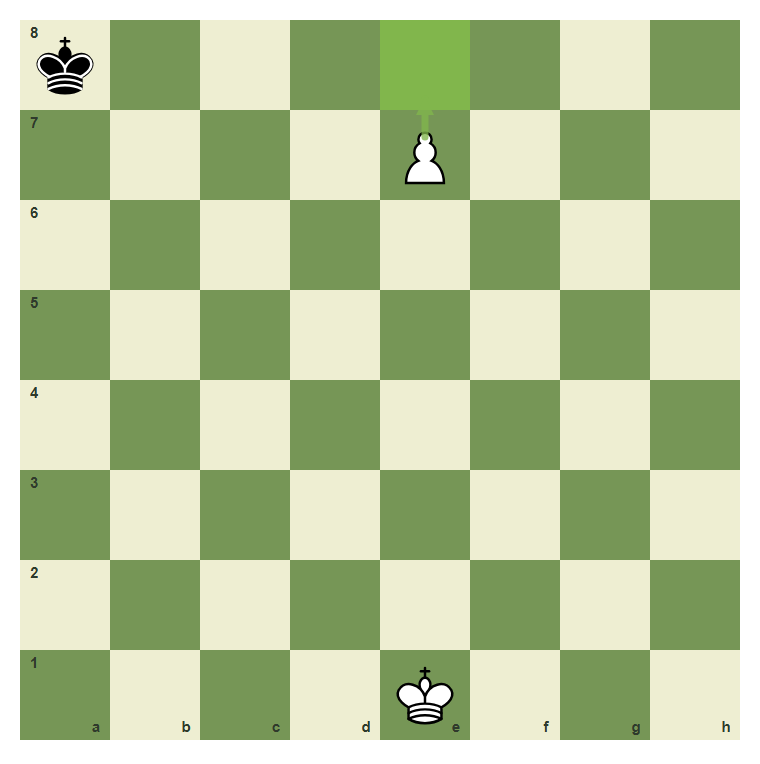
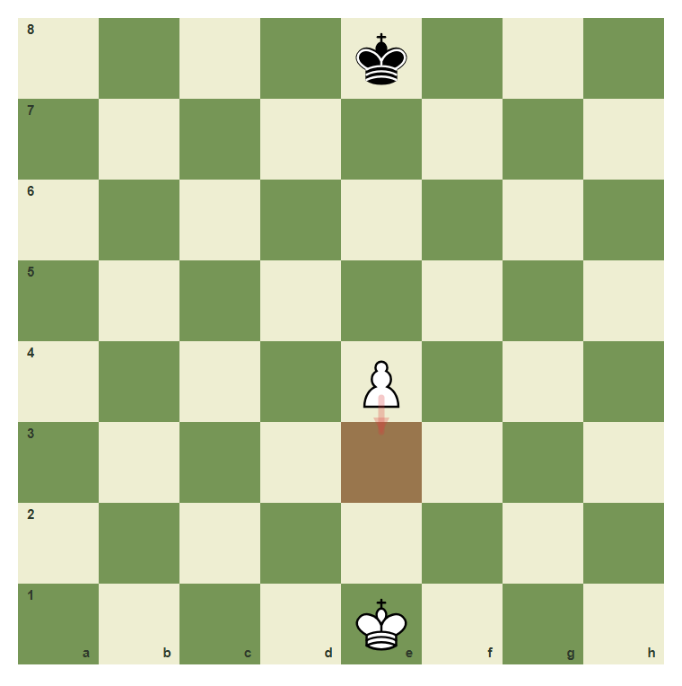

Pawn Moves, Captures, And Promotion
Pawns are small pieces with the most special rules.
- Move pawns one square forward.
- Use the two-square first move.
- Capture diagonally with pawns.
- Reject backward pawn moves.
- Understand promotion on the last rank.
Forward Movement
Pawns move forward, but they capture diagonally. White pawns move toward rank 8. Black pawns move toward rank 1.
White pawn one step

The white e-pawn can move one square from e2 to e3.
Two-square first move

From its starting square, the e-pawn can move two squares to e4 if the path is clear.
Captures And Promotion
A pawn does not capture straight ahead. It captures one square diagonally forward. If a pawn reaches the last rank, it promotes, usually to a queen.
Pawn captures diagonally

The pawn on e3 can capture the enemy pawns on d4 or f4.
Pawns do not capture forward

The pawn on e3 cannot capture the enemy pawn directly in front of it on e4.
Promotion square

When the pawn moves from e7 to e8, it promotes. The usual choice is a queen.
Play the two-square pawn move
Move the White e-pawn from e2 to e4.
Common Mistake
Common mistake: moving backward
A white pawn on e4 cannot move backward to e3. Pawns only move forward unless they are promoting or capturing diagonally forward.

Backward pawn moves are not legal.
Chapter Checkpoint
How does a white pawn move?
A white pawn normally moves:
How does a pawn capture?
A pawn captures:
What happens on the last rank?
A pawn that reaches the last rank: